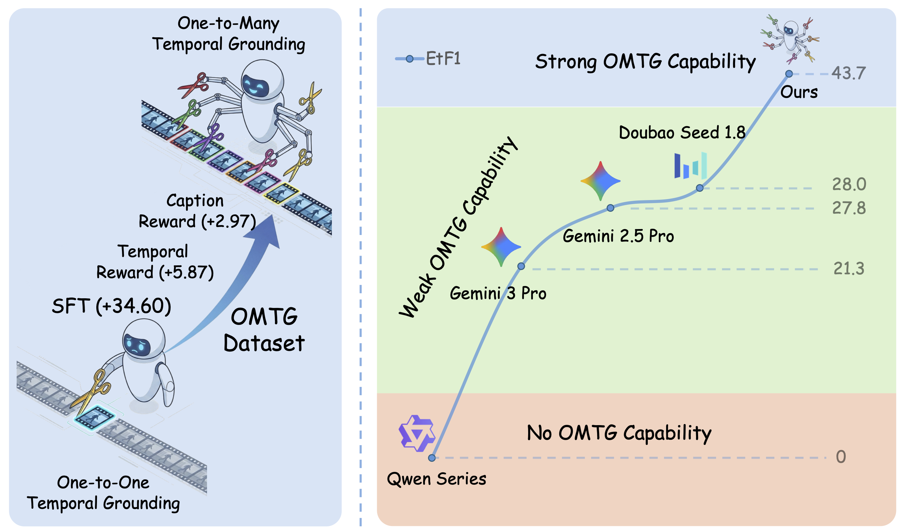
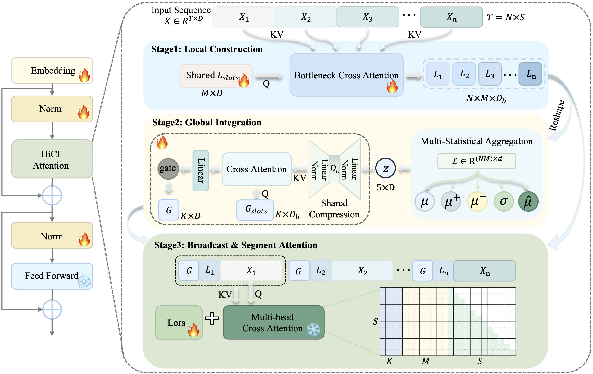
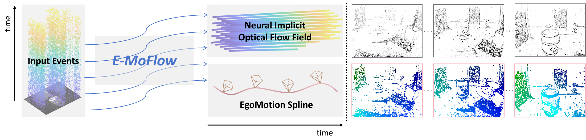

Westlake University
PhD Student in Artificial Intelligence, supervised by Prof. Peidong Liu.
Research: Embodied AI, Multimodal Large Language Models.
PhD Student in Artificial Intelligence
I am a PhD student at Westlake University, advised by Prof. Peidong Liu. My research focuses on embodied AI, multimodal large language models, and 3D Vision.
I am interested in building intelligent systems that perceive, reconstruct, reason about, and act within physical environments from visual and multimodal observations. I previously received my master's and bachelor's degrees from Wuhan University.
PhD Student in Artificial Intelligence, supervised by Prof. Peidong Liu.
Research: Embodied AI, Multimodal Large Language Models.

Research Intern, LLM Applications Team. Mentored by Xiangtai Li. Worked on multimodal model research and large-scale training systems.
Master in Pattern Recognition and Intelligent Systems, supervised by Prof. Shunping Ji.
Research: Computer Vision, 3D Reconstruction, Multimodal Learning.
B.S. in Spatial Information and Digital Technology.
HiCI was accepted to ICML 2026.
Towards One-to-Many Temporal Grounding was accepted to ICML 2026.
SIU3R received a NeurIPS 2025 Spotlight.
Perception, memory, and spatial reasoning foundations for agents that interact with physical environments.
Spatial-temporal reasoning over images, videos, language, and 3D observations for grounded multimodal intelligence.
Scene reconstruction, generation, and geometric representations from sparse, unposed, or multimodal observations.
Qi Xu is underlined. * denotes equal contribution.


ICML 2026
Introduces a systematic solution for one-to-many temporal grounding with a 56k-sample dataset and reinforcement learning using CoT-based rewards.



I am open to research conversations and collaborations on embodied AI, multimodal reasoning, 3D Vision, and vision-language systems that connect perception with action.